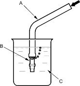
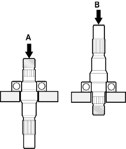
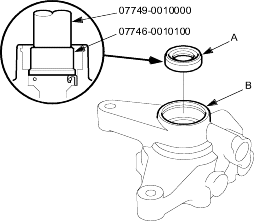
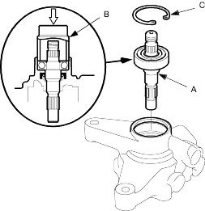

- Attach a hose (A) to the end of the pressure control valve (B) as shown. Then submerge the pressure control valve in a container of power steering fluid or solvent (C) and blow in the hose.
- If air bubbles leak through the valve at less than 98 kPa (1.0 kgf/cm2, 14.2 psi), replace the pump as an assembly. The pressure control valve is not available separately.
- If the pressure control valve is OK, set it aside for reassembly later.

- Inspect the ball bearing by rotating the outer race slowly. If you feel any play (axial or radial) or roughness, remove the faulty ball bearing (A), and install a new one (B).

- Inspect each part shown with an asterisk in the Exploded View; if any of them are worn damaged, replace the pump as an assembly.
- Install the new pump seal (A) (with its grooved side facing in) into the pump housing (B) by hand first, then drive it in using the special tools with until there is no step at the top of the pump seal is fully seated in the pump housing.

- Position the pump drive shaft (A) in the pump housing, then drive it in with the appropriate size socket wrench (B) as shown.

- Install the 40 mm circlip (C) with its radiused side facing out.